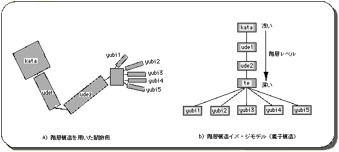
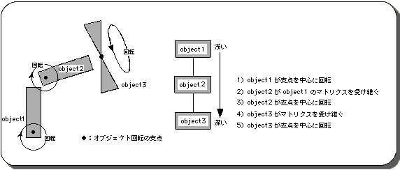
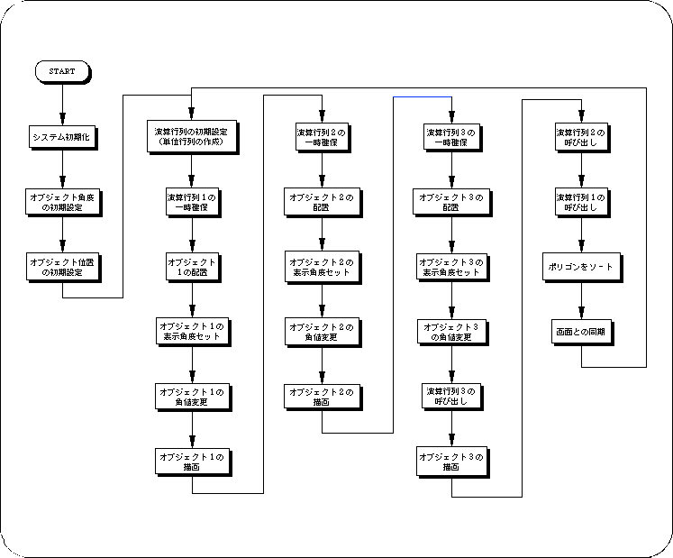

★SGL User's Manual
★PROGRAMMER'S TUTORIAL
★SGL User's Manual
★PROGRAMMER'S TUTORIAL


/*----------------------------------------------------------------------*/
/* Matrix Animation */
/*----------------------------------------------------------------------*/
#include "sgl.h"
extern PDATA PD_PLANE1, PD_PLANE2, PD_PLANE3;
static void set_poly(ANGLE ang[XYZ], FIXED pos[XYZ])
{
slTranslate(pos[X], pos[Y], pos[Z]);
slRotX(ang[X]);
slRotY(ang[Y]);
slRotZ(ang[Z]);
}
void ss_main(void)
{
static ANGLE ang1[XYZ], ang2[XYZ], ang3[XYZ];
static FIXED pos1[XYZ], pos2[XYZ], pos3[XYZ];
static ANGLE tang, aang;
slInitSystem(TV_320x224,NULL,1);
slPrint("demo B", slLocate(6,2));
ang1[X] = ang1[Y] = ang1[Z] = DEGtoANG(0.0);
ang2[X] = ang2[Y] = ang2[Z] = DEGtoANG(0.0);
ang3[X] = ang3[Y] = ang3[Z] = DEGtoANG(0.0);
pos1[X] = toFIXED( 0.0);
pos1[Y] = toFIXED( 40.0);
pos1[Z] = toFIXED(170.0);
pos2[X] = toFIXED( 0.0);
pos2[Y] = toFIXED(-40.0);
pos2[Z] = toFIXED( 0.0);
pos3[X] = toFIXED( 0.0);
pos3[Y] = toFIXED(-40.0);
pos3[Z] = toFIXED( 0.0);
tang = DEGtoANG(0.0);
aang = DEGtoANG(2.0);
while(-1) {
slUnitMatrix(CURRENT);
ang1[Z] = ang2[Z] = tang;
tang += aang;
if(tang < DEGtoANG(-90.0)) {
aang = DEGtoANG(2.0);
} else if(tang > DEGtoANG(90.0)) {
aang = -DEGtoANG(2.0);
}
slPushMatrix();
{
set_poly(ang1, pos1);
slPutPolygon(&PD_PLANE1);
slPushMatrix();
{
set_poly(ang2, pos2);
slPutPolygon(&PD_PLANE2);
slPushMatrix();
{
set_poly(ang3, pos3);
ang3[Y] += DEGtoANG(5.0);
slPutPolygon(&PD_PLANE3);
}
slPopMatrix();
}
slPopMatrix();
}
slPopMatrix();
slSynch();
}
}

★SGL User's Manual
★PROGRAMMER'S TUTORIAL